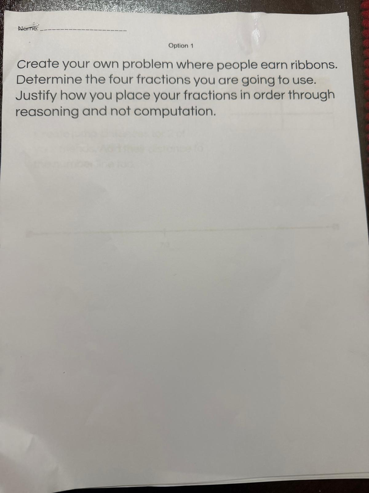
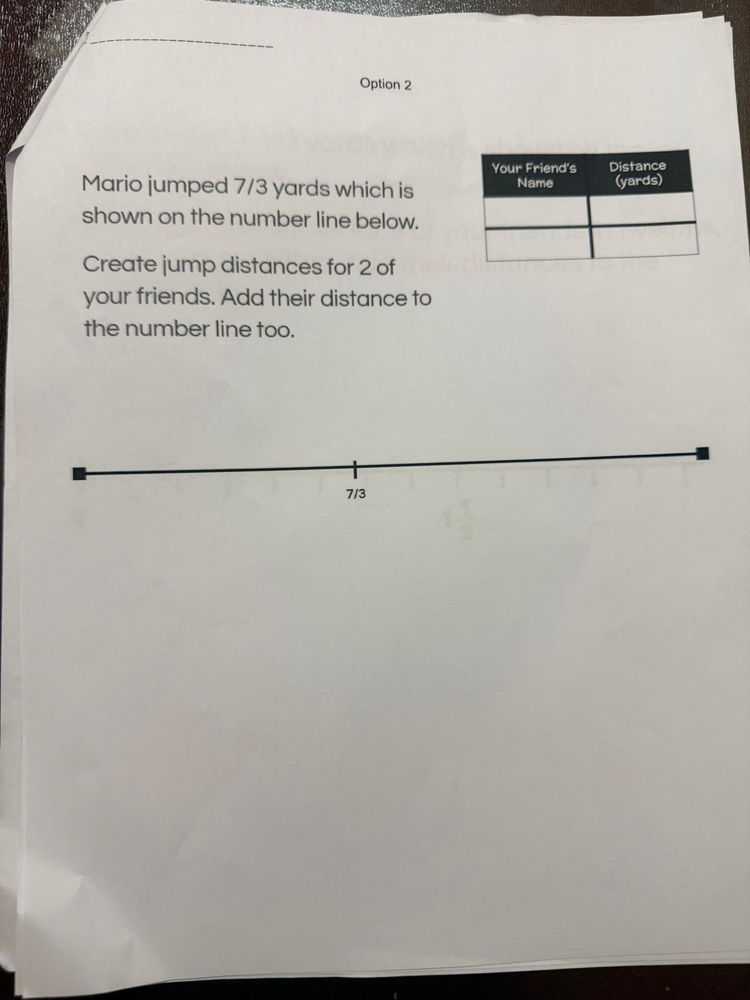
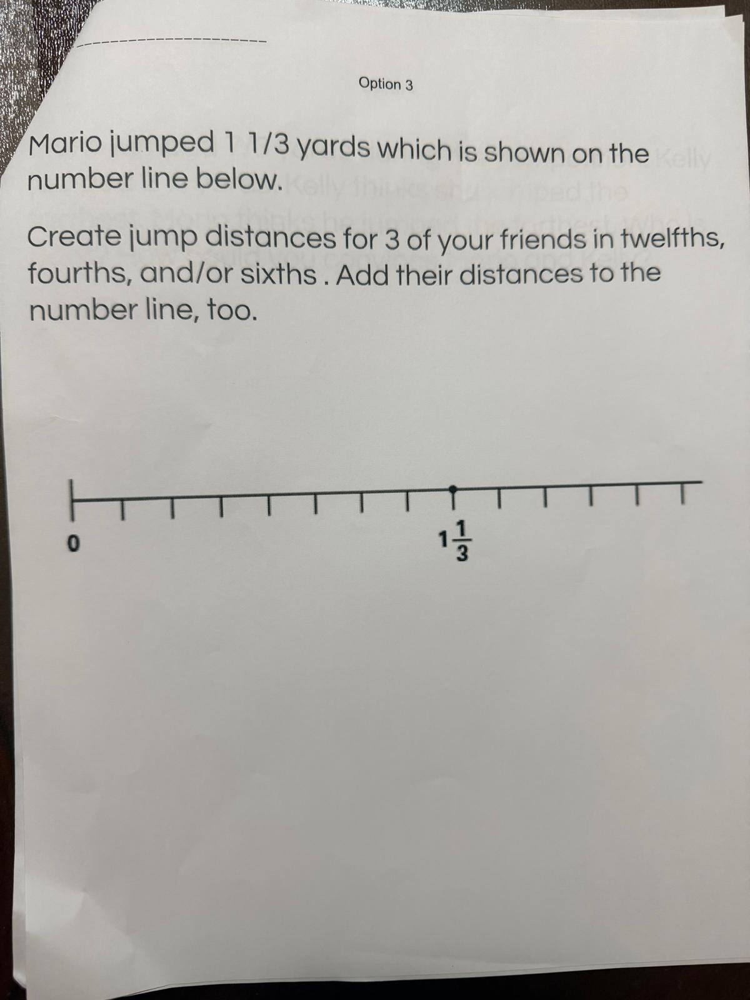
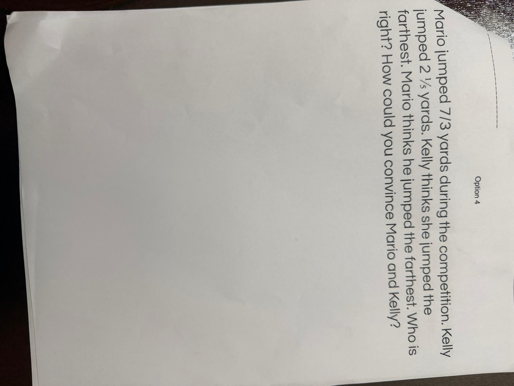

Create your own problem where people earn ribbons. Determine the four fractions you are going to use. Justify how you place your fractions in order through reasoning and not computation.
Mario jumped 7/3 yards which is shown on the number line below. Create jump distances for 2 of your friends. Add their distance to the number line too.
| Your Friend's Name | Distance (yards) |
|---|---|
Mario's jump is marked at 7/3. Draw your friends' jumps on the printable copy, then describe them below.
Mario jumped 1 1/3 yards which is shown on the number line below. Create jump distances for 3 of your friends in twelfths, fourths, and/or sixths. Add their distances to the number line, too.
| Your Friend's Name | Distance (yards) |
|---|---|
Mario's jump is marked at 1 1/3. The small ticks are twelfths.
Mario jumped 7/3 yards during the competition. Kelly jumped 2 1/5 yards. Kelly thinks she jumped the farthest. Mario thinks he jumped the farthest. Who is right? How could you convince Mario and Kelly?